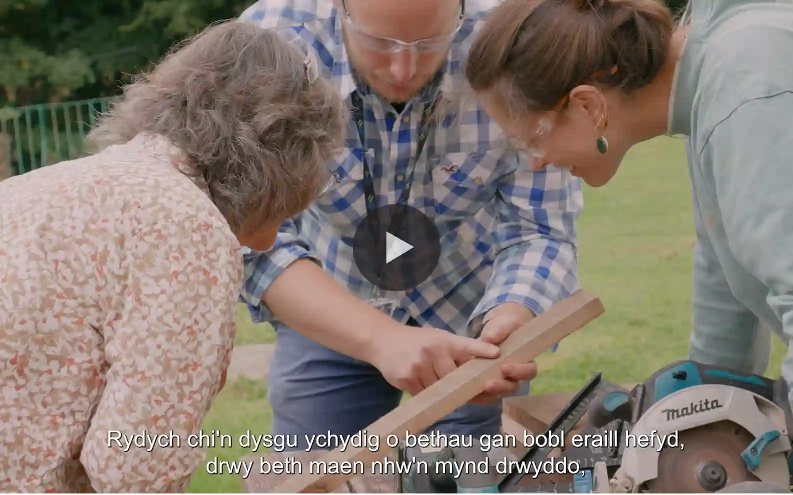
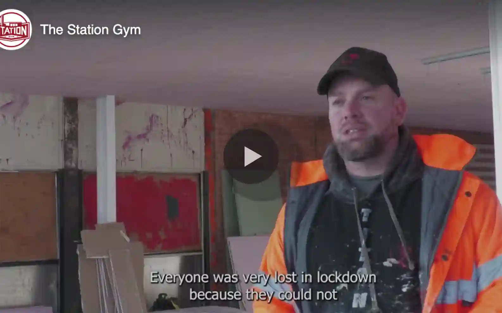
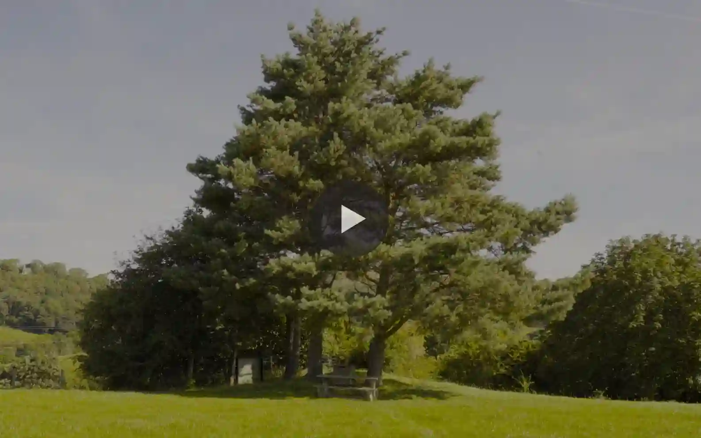
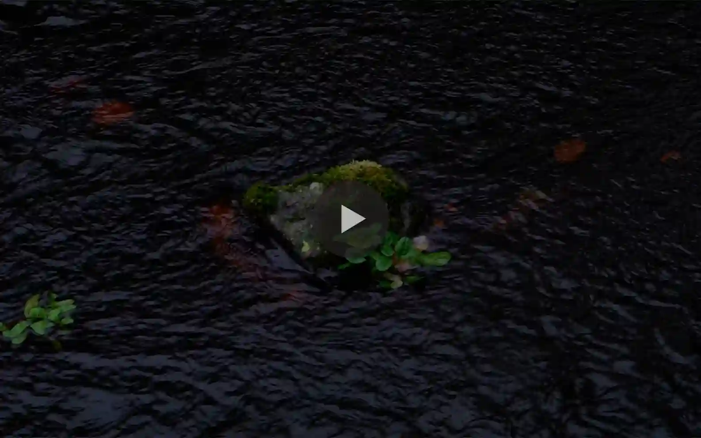
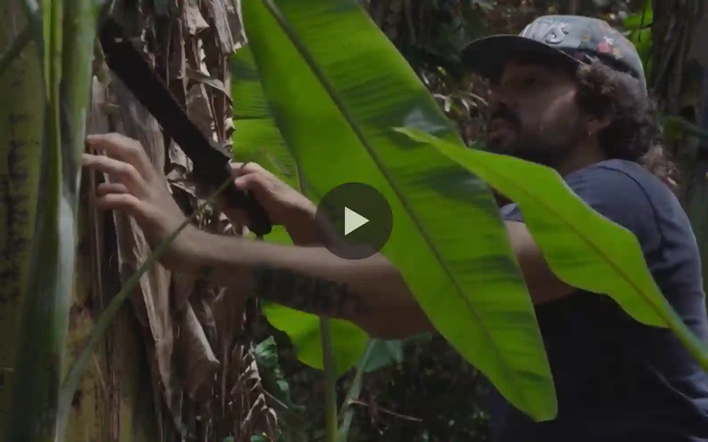

Multiply Project: Elusen GCSE Maths
Director · Editor · Marketing
Director · Editor · Marketing

Director · Editor · Marketing

Director · Editor · Marketing

Director · Editor · Visual Reel

Director · Editor · Visual Reel
Director · Editor · Visual Reel

Director · Editor · Storytelling
Director · Editor · Documentary
Based in North Scotland, Marcus is available for shooting and editing professional videos for businesses, events and storytelling projects across the Highlands and Islands.
At the age of 11, Marcus grabbed an old camcorder and made some videos of his home life. Despite the horrific lighting, angles, and dialogue (with incredible detriment to his family), he grew fascinated with learning how others lived their own lives. Time went by, and he went beyond the Welsh hills to explore more of the globe, gathering visuals wherever he could and pleased. But soon enough he knew he needed a foundation. He needed education. Diving in face first, Marcus would go on to earn a BA in anthropology from Goldsmiths and Copenhagen University before moving on to learn the ropes of media production. After several editing stints and taking on an MA in journalism at the University of Sheffield, he began carving his path in videography and documentary filmmaking. If you have any questions about the specifics or critiques of Marcus' life choices, please feel free to reach out! I hear he's lovely and flexible for relocation.
Looking for a videographer to capture your events, showcase your business or tell your story? I'd love to hear about your project or opportunity.